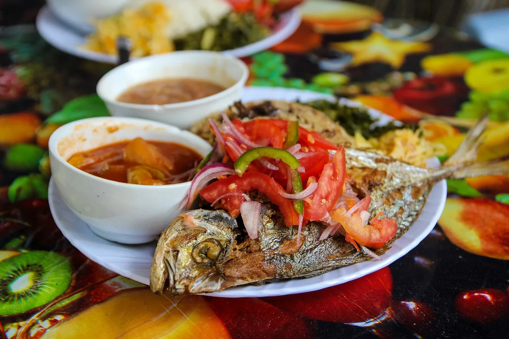

Rooted here
Make space for Tanzanian dishes, ingredients, and everyday food traditions.
Safari ya ladha inaanzia hapa. Ungana nasi kufichua vionjo vya kitamaduni na vya kisasa kutoka kila pembe ya dunia.

Search the recipe shelf
Search a dish or ingredient to see recipes from the PishiPoint library.
THE TASTE OF TANZANIA
Discover the dishes that bring us together. Celebrate Tanzanian flavours, explore global cuisine, and make every meal memorable.
Twende jikoni!What sounds good?
Choose a moment in your day and let a new idea find you.
Category photos show recipes from the publishers credited on each card.
A little further afield
Local flavours lead the way. There’s always room at the table for something new.
Recipe images and titles shown above come from their credited publishers via the connected recipe library.
The PishiPoint way
Make space for Tanzanian dishes, ingredients, and everyday food traditions.
Discover new ideas from a world of kitchens, one recipe at a time.
Search by dish or ingredient, save recipes, and make each one your own.
Pull up a chair